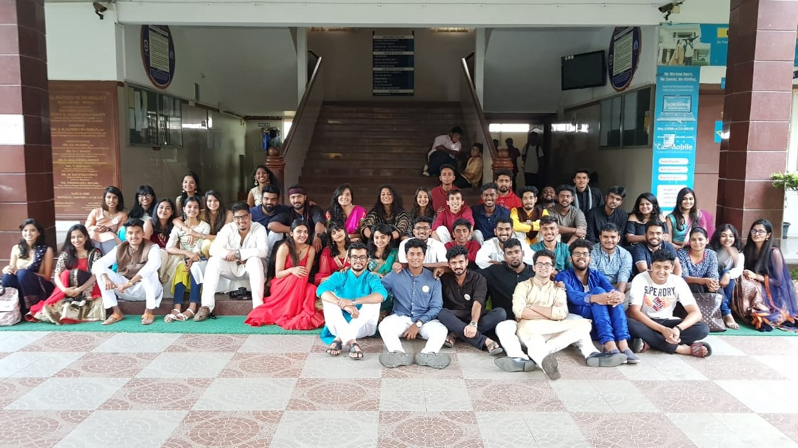

The Cultural Activity Team, commonly known as CAT is the backbone of extra curricular and cultural activities in RNSIT. The team consists of a number of creative and talented individuals who work tirelessly towards making every event hosted by the college a success. CAT is also responsible for organizing both the bi-annual fests namely Parichay and Pantheon. Parichay is an intra-college fest hosted every two years where the different departments of RNSIT compete against each other. Pantheon is an inter-college fest that sees a footfall of at least 3000 people from several colleges every time and never fails to dazzle the crowd.